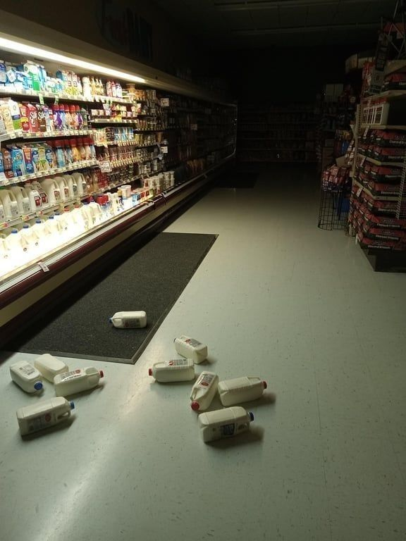

You enter a convinience store near your house at around 2am. So far
it's the only thing open.

While walking around for a few minutes, you start to notice a
change in the air. Heavy as it is, you push through the isles
anyways. Soon it feels like someone has their eyes on you. As
far as you've observed, you're the only person in the store.
There's a choice to be made here. Do you-
Turn around and leave. It can wait until tomorrow.
-or do you-
Stay for a few more minutes. You haven't observed
anything close to a threat.